Environment Art
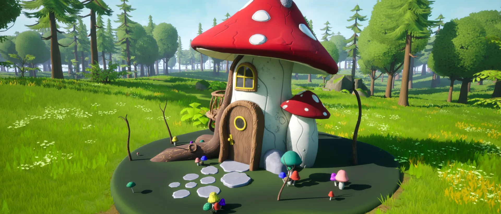
Mushroom House
A stylized mushroom house with a red spotted cap, a wooden porch, a curved wooden door, and small mushrooms across its base. The model is 10,714 polys and took about 12 hours. All images were rendered in Unreal Engine.
My Process
I began by blocking out the house in Maya and adding details such as the porch and small mushrooms. I subdivided the model and sculpted a high-poly version in ZBrush, then decimated it and textured the low-poly model in Substance 3D Painter with baking, masks, brushes, and generators. Finally, I imported the model and textures into Unreal Engine and set up the scene for the renders.
Interactive 3D Viewer
Technical Breakdown
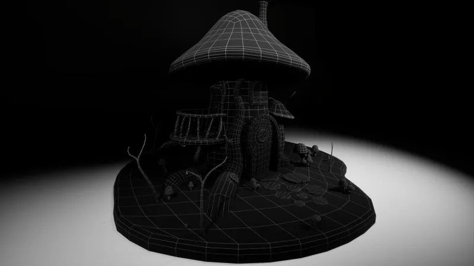
Wireframe Render
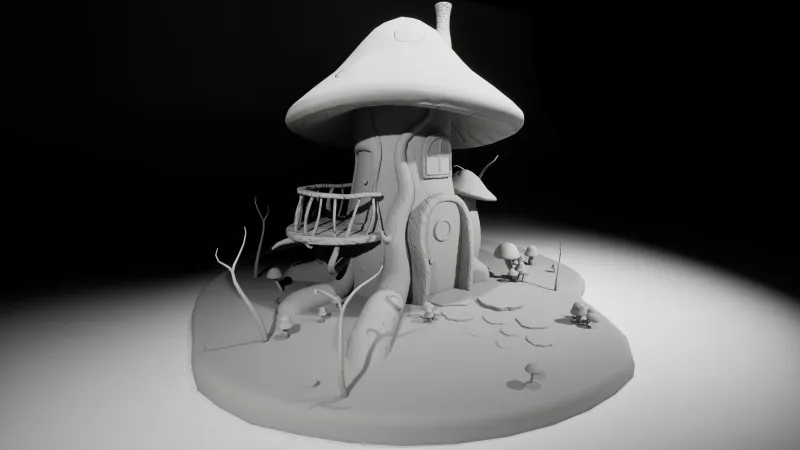
Untextured Render
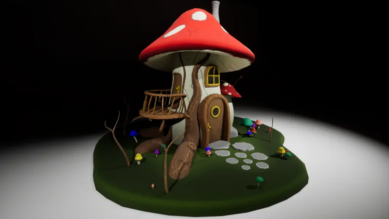
Textured Render
In-Engine Renders
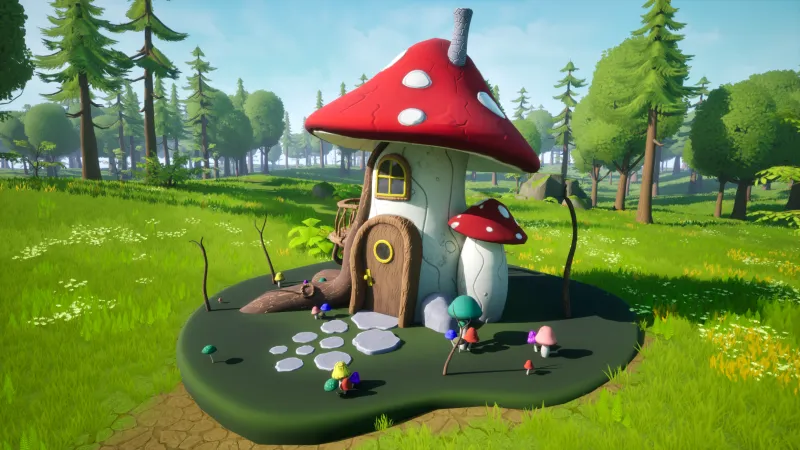
In-Engine Render 1
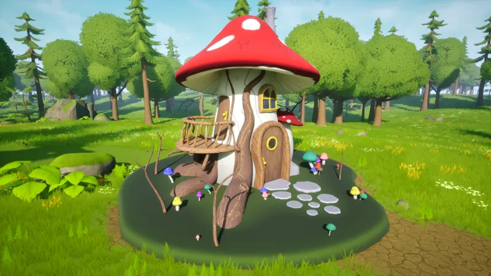
In-Engine Render 2
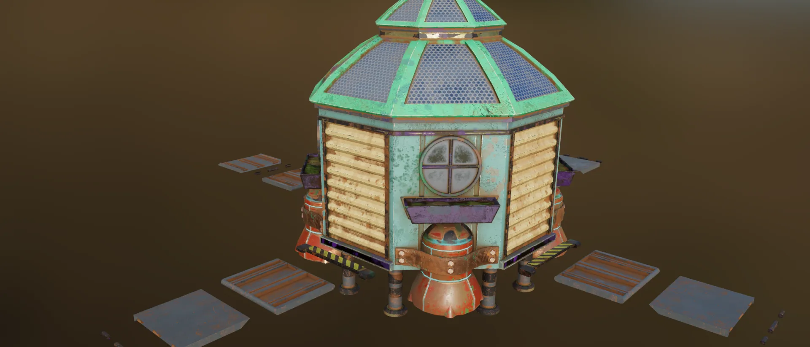
Garden Shed
Garden S.H.E.D. is a weathered, colorful shed built for Project Gardener and completed in August 2025. It has an octagonal body of louvered wood panels, a round window with a planter box, a paneled dome roof, and posters and paint wear layered across its walls. The renders were made in Unreal Engine and Substance 3D Painter.
My Process
I modeled the shed's octagonal body and louvered panels in Maya, then unwrapped the UVs and moved into Substance 3D Painter to build up the weathering, chipped paint, rust bleed, and layered poster decals, using masks and generators. I brought the finished model and textures into Unreal Engine for the final renders.
Interactive 3D Viewer
Renders
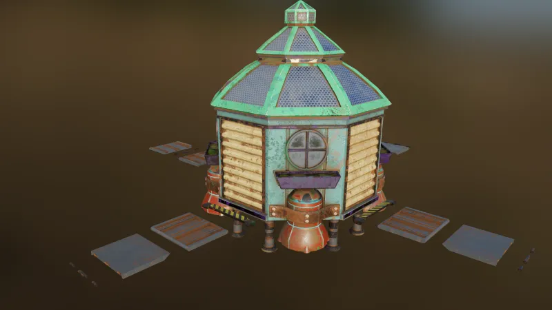
Overview Render
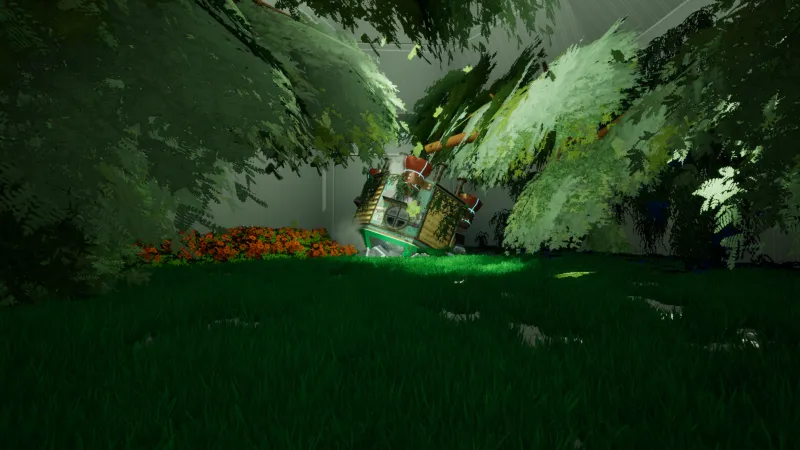
In-Engine Render
Detail Shots
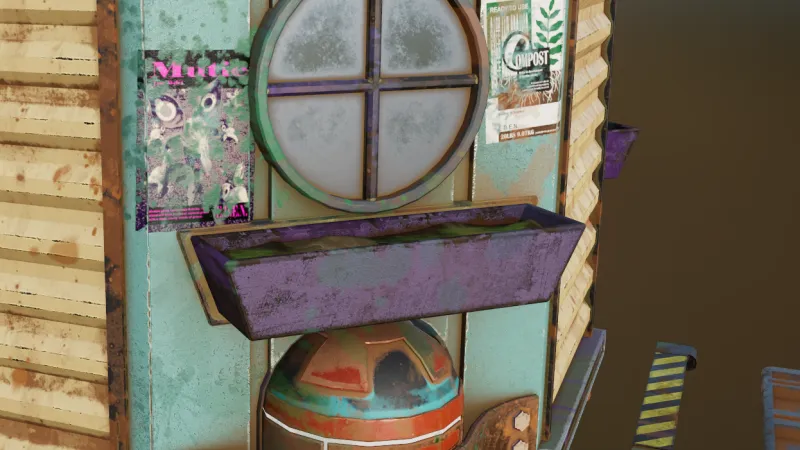
Window and Planter
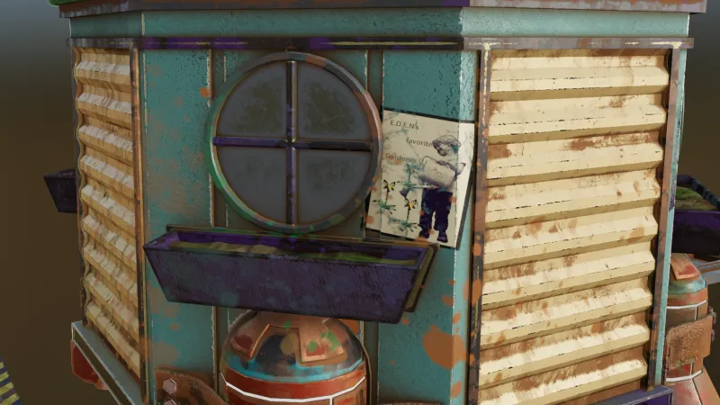
Wall Paneling
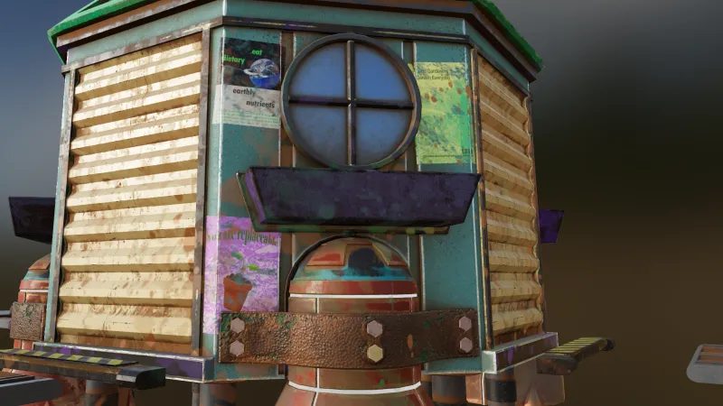
Posters and Wear
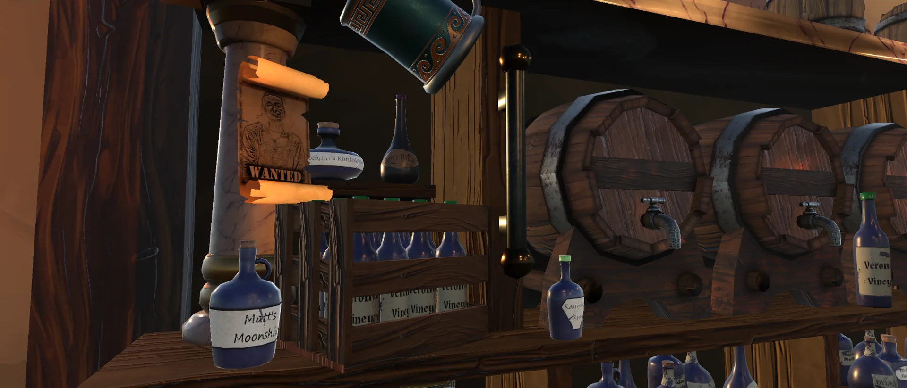
Shot Guesser
Environment and props for the Shot Guesser minigame, a tavern with a long bar, barrels, and shelves of bottles. I handled the level layout as well as the props, including the chalices and the cocktail shaker.
My Process
I blocked out the tavern's layout in Unity first, bar placement, sightlines, and player paths, before modeling the bar counter, shelves, and barrels in Maya and texturing them in Substance 3D Painter. Once the props were in, I spent time walking the space in-engine to adjust spacing and dressing until the level read clearly from a player's seat at the bar.
Level Flythrough
Environment Frames

Barrels and Shelves

Bar Counter

Tavern Corner
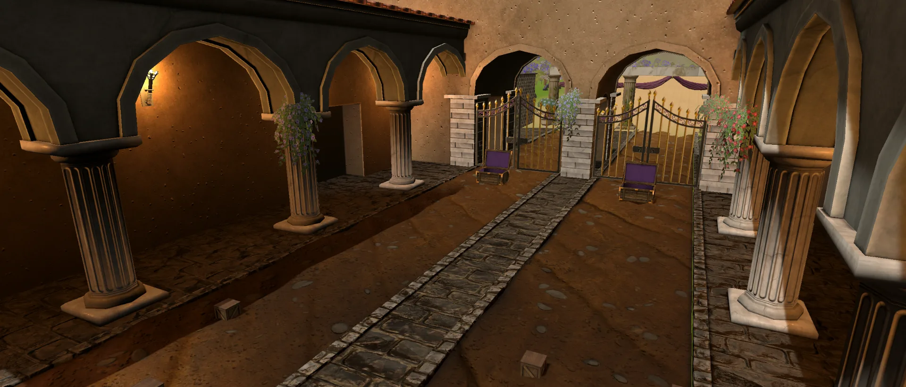
Leopard Tug
Environment and props for the Leopard Tug minigame, a columned stone hall opening onto a hillside vista, with a cobbled path, iron gates, and the collection crates. I handled the level layout and the props.
My Process
I started with the level's flow, a columned hall opening onto the hillside vista, blocking it out in Unity to get the sightlines and player paths right. I modeled the columns, gates, and crates in Maya, textured them in Substance 3D Painter, and then spent time in-engine tuning the layout so the vista read well from the play area.
Gameplay Preview
Environment Frames

Hillside Vista

Stone Arcade

Gate and Crates
Credits: Leopard character art by Katelynn Reyes. Animations by Benjamin Navarro.
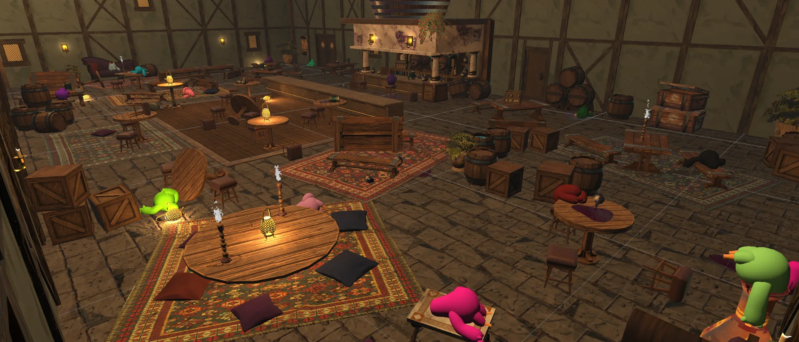
Hera Chase
Props and set dressing for the Hera Chase minigame, a crowded tavern floor with rugs, tables, barrels, and lanterns. I made about half of the props, including the power-ups, and dressed the set.
My Process
For the props I was responsible for, like the power-ups, I modeled them in Maya and textured them in Substance 3D Painter. Set dressing came after: I placed rugs, tables, and barrels around the tavern floor in Unity, adjusting the arrangement until the space felt lived-in without crowding the play area.
Gameplay Preview
Environment Frames
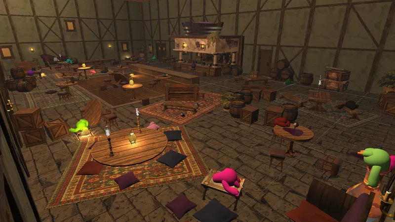
Tavern Overview
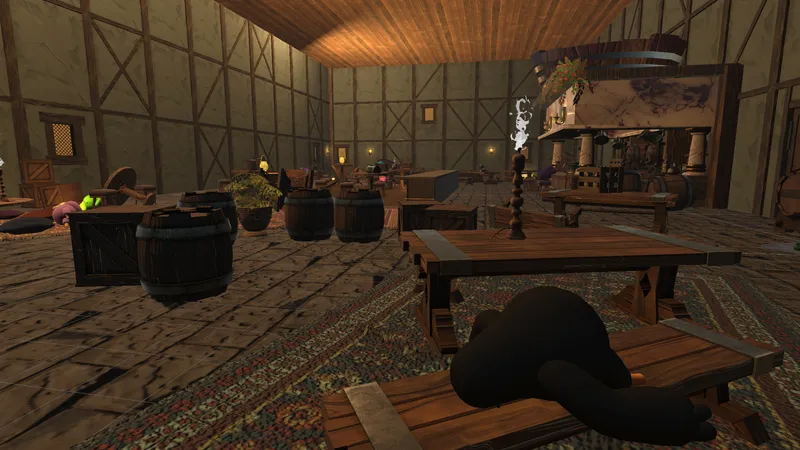
Set Dressing Detail
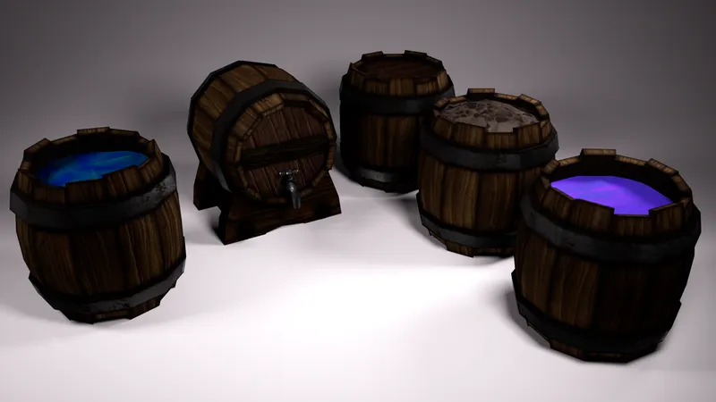
Props: Barrels
Credits: Hera character art by Katelynn Reyes. Animations by Benjamin Navarro. The rest of the environmental props by Veronica Mauro.

Grape Stomp
Terrain textures and props for the Grape Stomp minigame, a vineyard with a wooden stomping stage. I textured the terrain and made a few of the props, including the grape basin and the wine crate.
My Process
I textured the vineyard terrain in Unity, blending materials for the dirt path, grass, and terraced hills, then modeled and textured a handful of props, including the grape basin and wine crate, in Maya and Substance 3D Painter to round out the scene.
Gameplay Preview
Environment Frames

Vineyard Stage
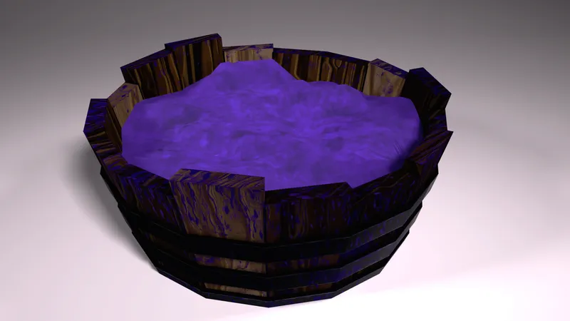
Props: Grape Basin
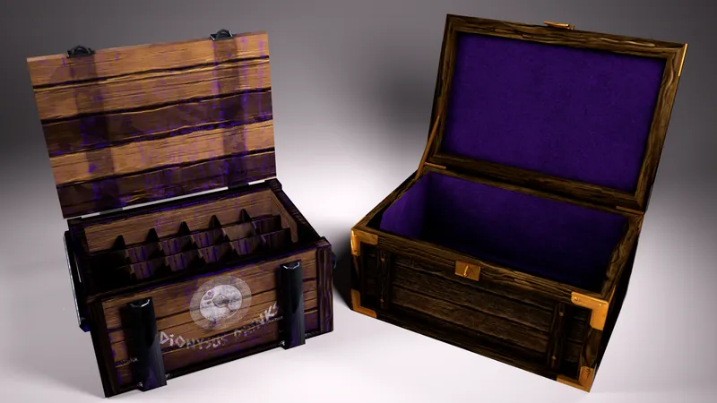
Props: Wine Crate
Credits: Level layout and most of the environmental props by Veronica Mauro. Animations by Benjamin Navarro.